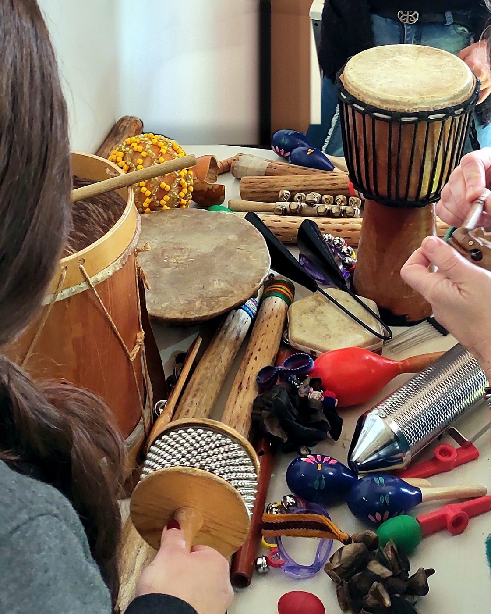
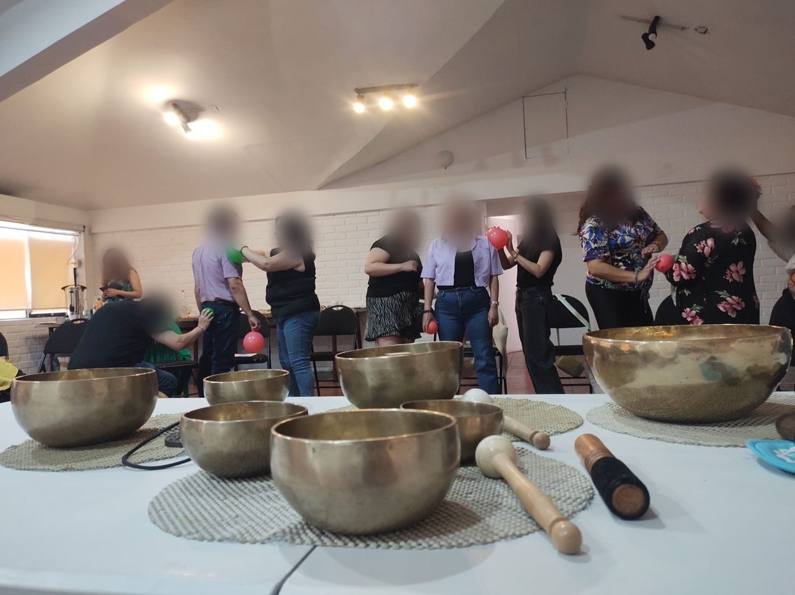
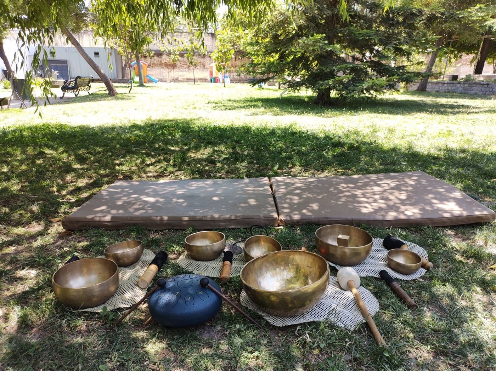
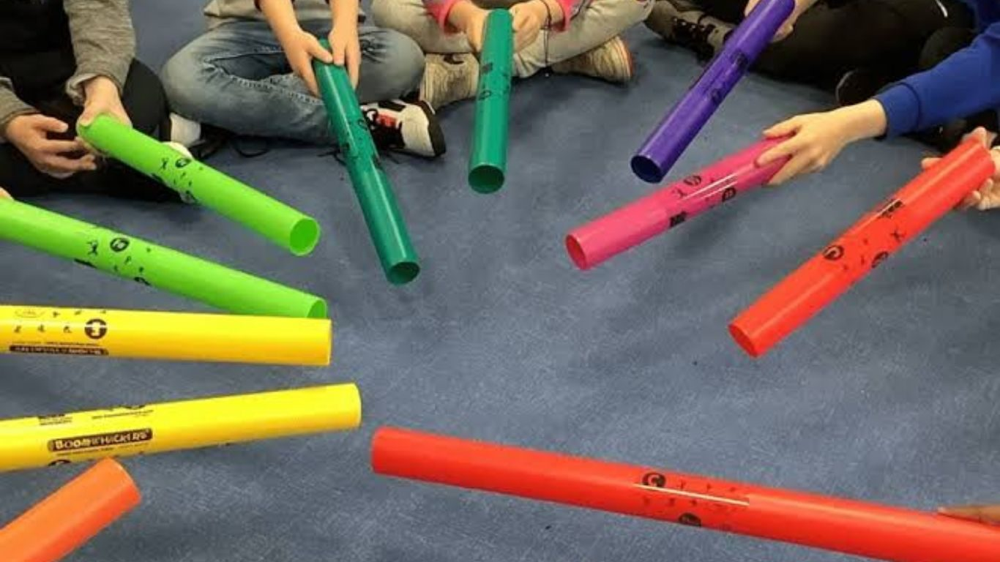
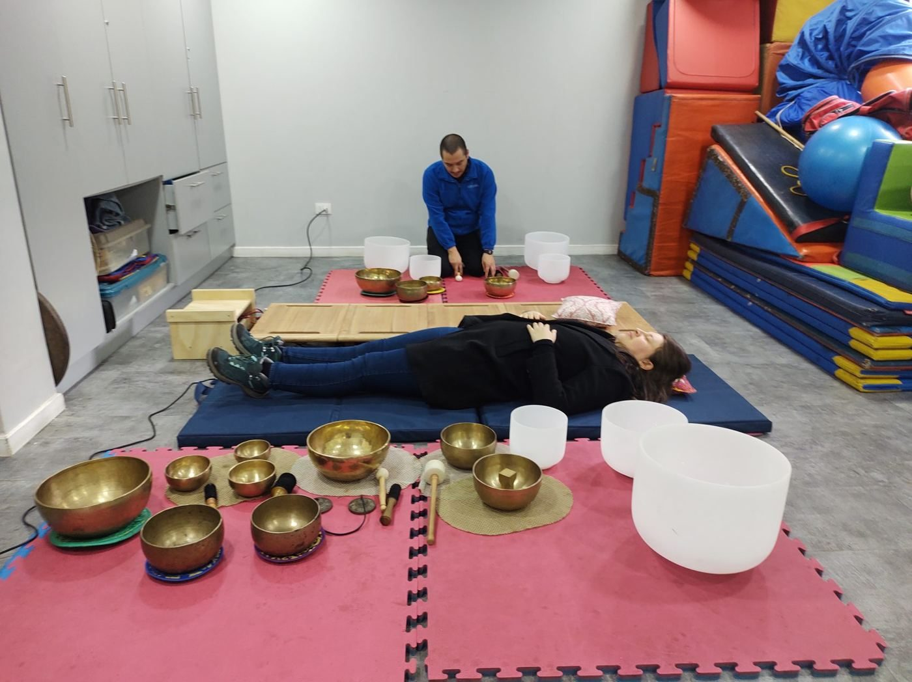
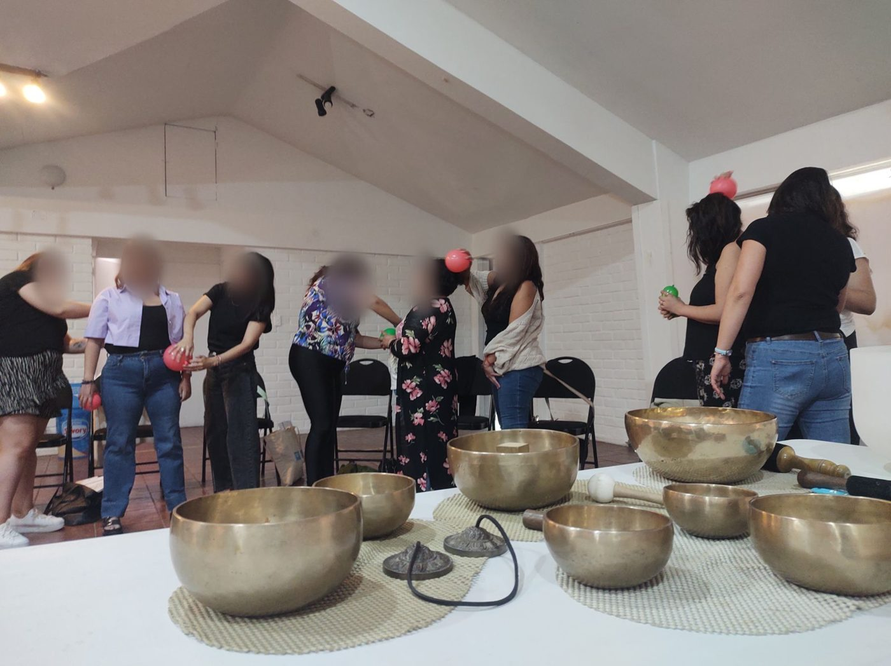

Bienestar a través de la música, el juego, el cuerpo y el arte. Este es nuestro espacio para seguir cultivándonos entre sábado y sábado.
El taller dura dos horas, pero el bienestar se cultiva durante toda la semana.
Cada sábado, después de nuestro encuentro, aquí se abre el material de esa sesión: una práctica en audio, una lectura breve y una actividad para experimentar en casa. Tómalo como una invitación, a tu ritmo y sin exigencias: no hay forma correcta ni incorrecta de hacerlo.

Cuidarte combina la música, el sonido, el cuerpo, el arte y la atención plena para favorecer el autoconocimiento y el bienestar integral. Estas son las disciplinas desde las que trabajamos:
Disciplina que utiliza la música y el sonido para promover la salud y el bienestar integral de las personas.
Vibraciones sonoras de baja frecuencia y cuencos para equilibrar cuerpo y mente, promoviendo una relajación profunda y alivio del estrés.
Integración de movimiento y conciencia corporal para el bienestar emocional y físico, liberando tensiones y bloqueos.
La expresión artística como herramienta de autoconocimiento y sanación emocional, sin necesidad de saber dibujar o pintar.
Enfoque que integra aspectos psicológicos y espirituales para el crecimiento personal y la paz interior.
Práctica de atención plena para la gestión emocional, la reducción del estrés y el bienestar general.
Cada sesión se abre el sábado en que nos encontramos.
Jugar para encontrarnos, conocer las emociones básicas en el cuerpo y descubrir la respiración como ancla del bienestar.
Abrir material →Se abre después de nuestro encuentro.
Se abre después de nuestro encuentro.
Se abre después de nuestro encuentro.
Se abre después de nuestro encuentro.
Se abre después de nuestro encuentro.
Aquí se irán reuniendo las prácticas del taller, para que puedas volver a ellas en cualquier momento.
Aquí iremos compartiendo las fotos de nuestros encuentros y las creaciones del grupo. Si quieres que una foto tuya aparezca, compártela en el grupo de WhatsApp del taller.



